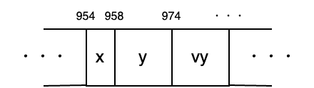
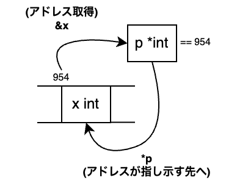

第十八章 指针（Pointer）
这次，我们将讨论编程初学者的“鬼门”，指针。我认为比起 C 语言，觉得 Go 指针难的人并不多。但仍然会有不少人害怕它，因此我会仔细地解说。
指针
指针/pointer 是一个用来**“指出某物位置”**的词，储存变量等的“位置”。用法如下所示。
package main
import "fmt"
func main() {
x := 42
p := &x // xのアドレスをpに代入
fmt.Println(p) // 0xから始まる謎の数字
fmt.Println(*p) // 42
*p = 99 // pが指し示す場所に99を代入
fmt.Println(*p) // 99
fmt.Println(x) // 99
}
$ go run .
0x1400009a020
42
99
99
新出现的 & 和 * 是进行指针相关操作的符号。可能会让人感到困惑，我们来一步步看看。
计算机的内部结构
计算机的核心是进行计算的 **CPU（英特尔整天做广告的那玩意）**和用于存储数据的内存（8GB 或 16GB 等）。它们通常被比作人类的大脑和桌面上的工作区域。大脑越聪明，计算越快；桌面越大，工作空间越宽裕。
这张桌子上的所有数据都井然有序地排列着，每个数据都有一个表示位置的数字。这个数字就是地址/address。最初是表示“住所”的词，有时也被翻译为“番地”。
下图是这样的内存中变量 x y vy 被保存的样子。
!954、958、974 等地址仅仅是为了说明“存在地址这个数字”而临时指定的值，因此与实际地址的分配方式有很大不同。请注意。
 内存内部的图像
变量存储在内存中，内存上的数据分配了地址，如果掌握了这些，指针就可以轻松应对了。
& 和 *
在 Go 中，如下图所示，可以通过 & 获取分配给变量的地址，通过 * 获取地址所指向的内容。

这样一来，开头的程序也一定能读懂了。
再贴一遍
package main
import "fmt"
func main() {
x := 42
p := &x // xのアドレスをpに代入
fmt.Println(p) // 0xから始まる謎の数字の正体は、xのアドレス！
fmt.Println(*p) // 42 (指し示す先はxなので)
*p = 99 // pが指し示すxに99を代入
fmt.Println(*p) // 99
fmt.Println(x) // 99
}
なお， fmt.Println(p) で显示的 0x ，这是 16 进制的意思。平常使用的 10 进制是用 0 到 9 的数字表示一位，而 16 进制则是用 0 到 9 和 A 到 F 共 16 种表示一位。在 Go 中，16 进制的前面加上 0x 以区分于 10 进制。
总之只是表示法不同而已，实际上只是整数，所以完全不用担心。例如 0x1400009a020 转换为十进制是 1374390165536 。地址使用十六进制只是一个习惯，所以不必太在意。
指针类型
下图中还有一个地方没有解释，那就是 p *int 的部分。
在 Go 中，可以将地址赋值给指针类型。指针类型以 *int 的形式写作 *型名 。
麻烦的是， & 获取的地址结果的类型不是 &int 而是 *int 。不过这是历史原因造成的，只能记住。个人来说，我希望指针类型叫 &int 。
零值，nil
指针类型的零值是 **nil（空）**这个特殊值。nil 表示不指向任何地方的无效值。
nil 指向的地方在 * 中使用时会崩溃，所以请小心使用。
func main() {
var p *int
*p = 42 // 崩溃
fmt.Println(*p)
}
利用 nil 的含义，也可以用来表示有无效和有效时的变量。
func main() {
p := 某个函数() // 返り値が無効な時と有効な時がある
if p != nil { // 有効な (nilではない) 時だけ処理を行う
fmt.Println(*p)
}
}
nil 不仅用于纯粹的指针类型，还用于 Go 提供的几种类型，表示空值。关于这一点我们会稍后再提。
结构体和指针
为了结合结构体和指针，提供了一些特殊的便利功能。
首先，在合成字面量前加上 & ，可以直接创建该结构体的指针，而无需通过变量。这是相当常用的。
pp := &position{10, 20}
// ↑と↓は同じ意味
p := position{10, 20}
pp := &p
另一个，当从结构体指针使用字段时，可以像普通结构体一样写 pp.x 。
pp := &position{10, 20}
pp.x = 30
fmt.Println(pp.x) // 30
如果没有这个功能，需要通过指针指向的结构体，那么在考虑 * 和 . 的优先级时，就必须写成 (*pp).x ，这真是一个非常感谢的功能。对于有 C 系语言经验的人来说，听到可以不必区分 . 和 -> ，应该就能明白了。
指针的使用场合
指针大致有三个使用场景。
- 避免大数据的复制
- 中身被改写
- 无效值用 nil 表示
最后一个已经提到过了，接下来我将对前两个进行解说。
使用场景 1：避免大量数据的复制
当将参数传递给函数时，该参数会被复制。如果该参数非常庞大，复制将耗费时间（复制庞大数据对计算机来说是重负担）。
指针只是一个数字，因此只需复制指针，就可以相对快速地在函数中通过指针使用该数据。

使用场景 2：要求更改原始内容
这也是由于参数被复制而引起的事情，但在函数内部对参数这个副本进行的任何修改都不会影响原始变量。
使用指针时，复制的指针也会指向原始变量，因此即使在函数内部也可以修改原始变量。
func f(x int) {
x = 99
}
func g(p *int) {
*p = 99 // 指针指向的地方 = 原始值被覆盖
}
func main() {
x := 42
f(x)
fmt.Println(x) // 42 x没有被更改
g(&x)
fmt.Println(x) // 99 x被更改了
}
猜数字游戏中出现的 fmt.Scanln 函数取参数为指针也是为了这个原因。
x := 0
fmt.Scanln(&x) // 此处的 x 被修改
其他用途
基本是以上所述，但在实践中正确区分所有指针，即使是熟练的程序员也非常困难。因此，这次我将传授一个大致可以说是 OK 的粗略指导。虽然提到了尚未涉及的 Go 功能，但请您谅解，并将其放在脑海的一角。
应使用指针的情况：
- 值写入函数
- 结构体型的参数
- 切片元素的类型
不需要使用指针的情况：
- 数值、真值型的参数（没有将其指针化的好处）
- 文字串、切片、映射、通道、闭包、接口类型的参数（实质上是指针类型）
重构
那么照例，我们来试试在重构中使用指针的感觉。根据上述指导方针，这次关注的是“切片元素的类型”和“结构体类型的参数”。在 var walls 和 drawWalls 附近似乎可以使用指针。
var walls = []*wall{}
func drawWalls(w *wall) {
那么我们来将其应用于整体。
package main
import (
"embed"
"math/rand/v2"
"github.com/eihigh/miniten"
)
//go:embed *.png
var fsys embed.FS
type wall struct {
wallX int
holeY int
}
var (
x = 200.0
y = 150.0
vy = 0.0 // Y方向速度(Velocity of y)的缩写
g = 0.1 // 重力加速度(Gravity) 的缩写
jump = -4.0 // 跳跃力
frames = 0 // 经过的帧总数
interval = 120 // 土管追加间隔
wallStartX = 640 // 土管的初始x坐标
walls = []*wall{} // 土管的X坐标与空洞的Y坐标
wallWidth = 20 // 土管的宽度
wallHeight = 360 // 土管的高度
holeYMax = 150 // 空洞的Y坐标的最大值
holeHeight = 170 // 空洞的大小（高度）
gopherWidth = 60
gopherHeight = 75
scene = "title"
score = 0 // 分数，全局变量。
isPrevClicked = false // 前一帧按钮没按下
isJustClicked = false // 这一帧按钮被按下
)
func main() {
miniten.Run(draw)
}
func draw() {
// ...省略...
}
func drawTitle() {
// ...省略...
}
func drawGame() {
miniten.DrawImageFS(fsys, "sky.png", 0, 0)
for i, wall := range walls {
if wall.wallX < int(x) {
score = i + 1
}
}
miniten.Println("Score", score)
if miniten.IsClicked() {
vy = jump
}
vy += g // 新的当前速度 = 当前速度+加速度
y += vy // 新的当前位置 = 当前位置+速度
miniten.DrawImageFS(fsys, "gopher.png", int(x), int(y))
// 从这里开始，写追加土管的代码
frames += 1
if frames%interval == 0 {
wall := &wall{wallStartX, rand.N(holeYMax)}
walls = append(walls, wall)
}
// 追加土管的代码，到这里就结束了
for i := range walls {
walls[i].wallX -= 2 // 往左动
}
for _, wall := range walls {
wall.wallX -= 2 // 往左动
}
for _, wall := range walls {
drawWalls(wall)
// ...省略...
}
if y < 0 {
scene = "gameover"
}
if 360 < y {
scene = "gameover"
}
}
func drawGameover() {
// 将背景、地鼠、土管的drawGame函数粘贴到这里
miniten.DrawImageFS(fsys, "sky.png", 0, 0)
miniten.DrawImageFS(fsys, "gopher.png", int(x), int(y))
for _, wall := range walls {
drawWalls(wall)
}
miniten.Println("Game Over")
miniten.Println("Score", score)
if isJustClicked {
scene = "title"
x = 200.0
y = 150.0
vy = 0.0
frames = 0
walls = []*wall{}
score = 0
}
}
func drawWalls(w *wall) {
// 描绘上面的土管
miniten.DrawImageFS(fsys, "wall.png", w.wallX, w.holeY-wallHeight)
// 描绘下面的土管
miniten.DrawImageFS(fsys, "wall.png", w.wallX, w.holeY+holeHeight)
}
func hitTestRects(aLeft, aTop, aRight, aBottom, bLeft, bTop, bRight, bBottom int) bool {
return aLeft < bRight &&
bLeft < aRight &&
aTop < bBottom &&
bTop < aBottom
}
最初提到的 walls 变量声明和 drawWalls 函数声明以外，
- 壁的附加处理（
&wall{...}） - 壁的移动处理（
wall.wallX -= 2） - 壁的重置处理（
walls = []*wall{}）
对全局影响不大，意外地容易适用。
有趣的是墙壁的移动处理。 for range 文中提取的元素类型变成了指针，因此可以通过复制的 wall 指针来修改原始值，结果不再需要使用循环次数 i 。实际上，这种新的写法在 Go 中是常见的写法。
// before
for i := range walls {
walls[i].wallX -= 2 // 往左移动
}
// after
for _, wall := range walls {
wall.wallX -= 2 // 往左移动
}
本章总结
指针表示变量的位置。在 Go 中，使用 & 获取地址，使用 * 获取地址所指向的内容。指针用于避免大数据的复制或在函数中修改变量。
计算机的核心与其深度相关，想要正确使用即使是熟练者也会感到困难，但如果掌握基本方针，大多数情况下应该能够编写出合格的程序。